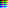

Anaglyph HALD Generator (Anahald) - Invocation
By Oleg Kosyakovsky
Table of Contents
Notes on expected users' knowledge could be found in installation guide.
Notes on glossary:
- the author uses interchangeably the terms "folder" and "directory"; the former is misleading but widely known , the latter is technically correct but for some reason "obstructed" from the common users
- the author uses interchangeably the terms "Tcl shell" and "Tcl interpreter"
- the author uses interchangeably the terms "command-shell* and "shell*; these refer to CMD or BASH
- "LUT" means lookup table, "CLUT" means color lookup table; the author uses these two terms and terms "HALD", "HALD-LUT", "HALD-CLUT" interchangeably
- "Identity-HALD" standardly means a HALD-CLUT that maps each color to itself
- the author refers to a HALD-CLUT made by Anaglyph HALD Generator as "balanced HALD"
- the author uses interchangeably the terms "configuration file", "config file", and "config"
- the author uses interchangeably the terms "anaglyph" and "red-cyan anaglyph"
- "balancing" a color means replacing it with some related anaglyph-friendly color obtained by reducing the difference between red channel on one side, and green and blue channels on the other side
- sides-ratio is a ratio between values of red channel, and maximum of green and blue channels - the larger divided by the smaller; used as a measure of disbalance in colors
Anahald User Commands
In the first version Anaglyph HALD Generator consists of two command-line utilities::
- The HALD-CLUT generation itself - "anahald_lut_make"
- Configuration file reader - "anahald_cfg_table"
Command to make HALD CLUT according to a configuration file
The anahald_lut_make utility implementing this command is the core functionality of Anahald.
For this section it's enough to accept the author's claim that an Anahald configuration file fully defines characteristics of the color correction performed by HALD-CLUT that results from it. Full spec of the file syntax and the parameters is provided in Anahald Configuration Files and Control Parameters.
Trying to run anahald_lut_make.bat (or anahald_lut_make.sh) without arguments prints the command-line syntax help:
* Usage: anahald_lut_make.bat <CONFIG-PATH> <HALD-LEVEL> <OUTPUT-DIRECTORY-PATH> (minimal reasonable hald-level is 8, recommended for production - 16)
- Note: under Windows use anahald_lut_make.bat in any shell - whether CMD or BASH; under Linux - use anahald_lut_make.sh
- While not shown in the help, you may need to precede Anahald script name with directory path - for example C:\Photo\ANAHALD\bin\anahald_lut_make.sh
- CONFIG-PATH is the full or relative path of the input Anahald config file - for example C:\Photo\ANAHALD\CFG\ahg_oleg_sf.ini
- HALD-LEVEL defines number of colors in the resulting CLUT and thus its size:
- for detailed info see Hald Images, Clut Technology
- number-of-colors == LEVEL ^ 6 (16777216 for level==16)
- supported range: 1 … 16
- the more colors appear explicitly in the CLUT, the higher the conversion precision
- HALD-based conversion interpolates intermediate colors
- runtime and (temporary) disk space are affected too; see Performance and computer-memory considerations
- for detailed info see Hald Images, Clut Technology
- OUTPUT-DIRECTORY-PATH is a full or relative path of the directory where Anahald will write two files:
a) the resulting HALD image in 8-bit TIFF format, LZW-compressed (non-lousy)
b) a potentially *_huge*_ temporary file with textual representation of the resulting image
- making a level-16 HALD involves temporary text file of ~850 megabytes
- Anahald checks the amount of available free space and aborts the run in the very beginning if it's insufficient for the requested HALD level
- in case of successful completion Anahalds deletes the temporary file
- making a level-16 HALD involves temporary text file of ~850 megabytes
Revisiting the sample run of HALD-CLUT generation and its output from Comparison of identity HALD with …:
$ bin/anahald_lut_make.sh CFG/ahg_oleg_cp.ini 2 TMP ... -I- Generated HALD-02 with 48 of 64 color(s) replaced; new text version saved in 'TMP/hald__ahg_oleg_cp__02.TXT' ... -I- Success converting HALD text file 'TMP/hald__ahg_oleg_cp__02.TXT' into image 'TMP/hald__ahg_oleg_cp__02.TIF' ... -I- Deleted temporary HALD-02 text file 'TMP/hald__ahg_oleg_cp__02.TXT' ...
Identity HALD (left) and generated balanced HALD (right)

Figure 1: Identity HALD (left) versus the balanced HALD (right)
Command to read and summarize available Anahald configuration files
The anahald_cfg_table utility collects essential contents of config files presented to it, and formats this contents into an easy to grasp table.
- Anahald config files define configuration parameters detailed in *The simplified view of color-modification process, *Color computation steps in order and Anahald Configuration Files and Control Parameters
Running anahald_cfg_table.bat (or anahald_cfg_table.sh) without arguments prints the command-line syntax help:
* Usage (1): anahald_cfg_table.sh GLOB <CONFIG-DIRECTORY-PATH> <CONFIG-FILEPATH-PATTERN> ... * Usage (2): anahald_descr.sh LIST <CONFIG-FILENAME-1> <CONFIG-FILENAME-2>
- remember, under Windows use anahald_cfg_table.bat in any shell - whether CMD or BASH; under Linux - use anahald_cfg_table.sh
- GLOB and LIST are literal keywords selecting one of the two flavors:
(the flavors differ in how they search for config files)
The GLOB flavor looks in directory CONFIG-DIRECTORY-PATH for files whose names match glob pattern specified by CONFIG-FILEPATH-PATTERN argument
- the syntax of wildcard in patterns is pretty standard - "*" means anything-or-nothing-any-length, "?" means any-character-or-nothing; a good explanation could be found in https://www.tcl.tk/man/tcl8.6/TclCmd/glob.htm
- but do note the directory separator in the pattern is always "/", even on Windows
- glob patterns need double-quotes
- but do note the directory separator in the pattern is always "/", even on Windows
- The following 5 examples produce the same output in various "combinations" of BASH or CMD under Linux or Windows assuming the current working directory is "<USER-HOME-DIRECTORY>/ANY/TMP/ANAHALD"
bin/anahald_cfg_table.sh GLOB CFG "*p.ini" #1 - Linux BASH bin/anahald_cfg_table.bat GLOB CFG "*p.ini" #2 - Windows BASH bin/anahald_cfg_table.sh GLOB "~/ANY/TMP/ANAHALD" "CFG/*p.ini" #3 - Linux BASH bin/anahald_cfg_table.bat GLOB "~/ANY/TMP/ANAHALD" "CFG/*p.ini" #4 - Windows BASH bin\anahald_cfg_table.bat GLOB "~/ANY/TMP/ANAHALD" "CFG/*p.ini" #5 - Windows CMD ... -ID-|Green|MinBn|MaxRg|Smoot|PreSq|MinMi|PreIn|MaxBa |ToBlu|dBala| bVal|hBndB|ueeze|norSc|flate|lance |eBias|ncedM| |alanc|Major|aleOp|Minor|dMajo |MultW|ajorT| |edOpt|ToFra| tion|ToFra|rToMa |henMi|oMaxM| | ion| ct| | ct|xMino | nor|inorR| | | | | |rRati | | atio| | | | | | o ahg_oleg_cp| 0.97| 1.5| 255| 2| 0.80| 2| 1.0| 3.0 ahg_oleg_gp| 1.0| 1.3| 255| 2| 0.90| 2| 1.0| 2.0- the syntax of wildcard in patterns is pretty standard - "*" means anything-or-nothing-any-length, "?" means any-character-or-nothing; a good explanation could be found in https://www.tcl.tk/man/tcl8.6/TclCmd/glob.htm
The LIST flavor looks for literally specified files
- each file is represented by its full path - either relative or absolute
- path are separated by spaces
- The following 5 examples produce equal output in various "combinations" of BASH or CMD under Linux or Windows assuming the current working directory is "<USER-HOME-DIRECTORY>/ANY/TMP/ANAHALD"
bin/anahald_cfg_table.sh LIST ~/ANY/TMP/ANAHALD/CFG/ahg_oleg_gp.ini CFG/ahg_oleg_ec.ini #1 - Linux BASH - relative paths bin/anahald_cfg_table.bat LIST ~/ANY/TMP/ANAHALD/CFG/ahg_oleg_gp.ini CFG/ahg_oleg_ec.ini #2 - Windows BASH - relative paths bin/anahald_cfg_table.sh LIST /home/users/Oleg/ANY/TMP/ANAHALD/CFG/ahg_oleg_gp.ini /home/users/Oleg/ANY/TMP/ANAHALD/CFG/ahg_oleg_ec.ini #3 - Linux BASH - absolute paths bin/anahald_cfg_table.bat LIST "C:/Users/Oleg/ANY/TMP/ANAHALD/CFG/ahg_oleg_gp.ini" C:/Users/Oleg/ANY/TMP/ANAHALD/CFG/ahg_oleg_ec.ini #4 - Windows BASH - absolute paths bin\anahald_cfg_table.bat LIST "C:/Users/Oleg/ANY/TMP/ANAHALD/CFG/ahg_oleg_gp.ini" C:/Users/Oleg/ANY/TMP/ANAHALD/CFG/ahg_oleg_ec.ini #5 - Windows CMD - absolute paths ... -ID-|Green|MinBn|MaxRg|Smoot|PreSq|MinMi|PreIn|MaxBa |ToBlu|dBala| bVal|hBndB|ueeze|norSc|flate|lance |eBias|ncedM| |alanc|Major|aleOp|Minor|dMajo |MultW|ajorT| |edOpt|ToFra| tion|ToFra|rToMa |henMi|oMaxM| | ion| ct| | ct|xMino | nor|inorR| | | | | |rRati | | atio| | | | | | o ahg_oleg_gp| 1.0| 1.3| 255| 2| 0.90| 2| 1.0| 2.0 ahg_oleg_ec| 1.0| 1.0| 255| 1| 0.90| 1| 1.0| 2.0- each file is represented by its full path - either relative or absolute
- in the output - for any flavor - values for missing parameters, if any, would be replaced with "?"
- Notes on file-path syntax - applicable for all flavors of "anahald_cfg_table" utility:
- in config-file directory or as part of the pattern, paths follow Tcl style irrespective of which shell is used (CMD or BASH):
- paths with spaces should be enclosed in double-quotes (")
- directory separator is always slash (/), even on Windows
- absolute paths on Windows begin with disk name (both in CMD and in BASH):
- "C:/Users/Oleg/ANY/TMP/ANAHALD/CFG/ahg_oleg_gp.ini" ### example of absolute path on Windows
- "C:/Users/Oleg/ANY/TMP/ANAHALD/CFG/ahg_oleg_gp.ini" ### example of absolute path on Windows
- absolute paths on Linux begin with root directory (/)
- "/home/Oleg/ANY/TMP/ANAHALD/CFG/ahg_oleg_gp.ini" ### example of absolute path on Linux
- "/home/Oleg/ANY/TMP/ANAHALD/CFG/ahg_oleg_gp.ini" ### example of absolute path on Linux
- paths with spaces should be enclosed in double-quotes (")
- absolute executable paths (the "anahald_XXX.sh" or "anahald_XXX.bat" utilities themselves) follow the syntax specific to OS and command-shell combination:
- in the above examples the Anahald utility path is:
a) "~/ANY/TMP/ANAHALD/bin/anahald_cfg_table.sh" - in BASH under Linux
b) "~/ANY/TMP/ANAHALD/bin/anahald_cfg_table.bat" - in BASH under Windows
c) "/home/Oleg/ANY/TMP/ANAHALD/bin/anahald_cfg_table.sh" - in BASH under Linux
d) "/C/Users/Oleg/ANY/TMP/ANAHALD/bin/anahald_cfg_table.bat" - in BASH under Windows
e) "C:\Users\Oleg\ANY\TMP\ANAHALD\bin\anahald_cfg_table.bat" - in CMD under Windows
- in the above examples the Anahald utility path is:
- in config-file directory or as part of the pattern, paths follow Tcl style irrespective of which shell is used (CMD or BASH):
Performance and computer-memory considerations
Anaglyph HALD Generator does its work by first constructing a potentially huge file containing the HALD image in PPM plain-text format, then converting it into a proper TIFF image, then deleting the text file.
- the maximum supported HALD-level of 16 means 16777216 colors, and HALD image in the textual format is around 200 megabytes
- Anahald checks the amount of available free space and aborts the run in the very beginning if it's insufficient for the requested HALD level
- Anahald checks the amount of available free space and aborts the run in the very beginning if it's insufficient for the requested HALD level
- generating a level-16 HALD takes some 6.5 minutes on a rather powerful mainstream PC
Disk space consumption could be a major problem - it slows down the process AND may over-stress the physical storage.
Especially when outputting multiple times to not-too-big SSD or flash drive, huge temporary files may even cause wearout of the equipment.
The author's solution is to put the output directory onto a RAM drive.
- a possible option for Windows-11: Dataram, though it seems to be discontinued.
A reasonable workflow approach would be to make level-8 HALD-s for trial and evaluation purposes, and generate the ultimate level-16 HALD only when the configuration is finalized.